JOHNNIE
WALKER
NUESTRO WHISKY
NUESTRAS ETIQUETAS
MEZCLAS EXCLUSIVAS
EDICIONES LIMITADAS
CÓCTELES CON WHISKY
CULTURA DEL WHISKY
HISTORIA DEL WHISKY
COMO SE ELABORA EL WHISKY
BLENDED SCOTCH WHISKY
TIPOS DE WHISKY
CÓMO BEBER WHISKY
LA HISTORIA DE JOHNNIE WALKER
REGALOS JOHNNIE WALKER
ETIQUETAS DE JOHNNIE WALKER
EDICIONES LIMITADAS
VISÍTENOS EN MADRID
EXPLORA NUESTRA WHISKY
JOHNNIE WALKER COLOURS
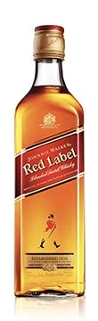 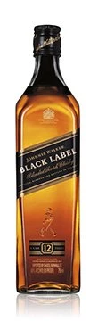
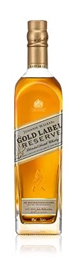 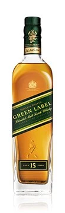
LIMITED EDITIONS
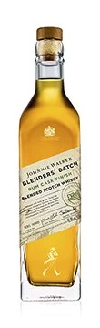 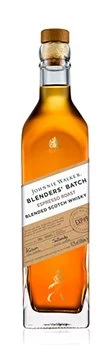
JOHN WALKER & SONS
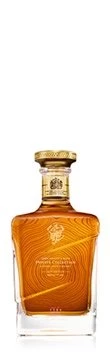 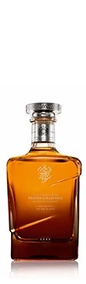 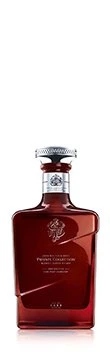 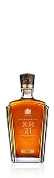 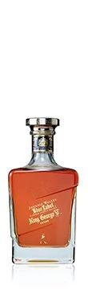 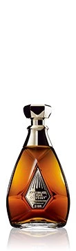 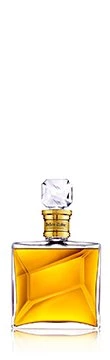
MÁS SOBRE NUESTRO WHISKY
PREPARACIONES Y COCTELES CON WHIKEY
Nuestros cocteles mas populares
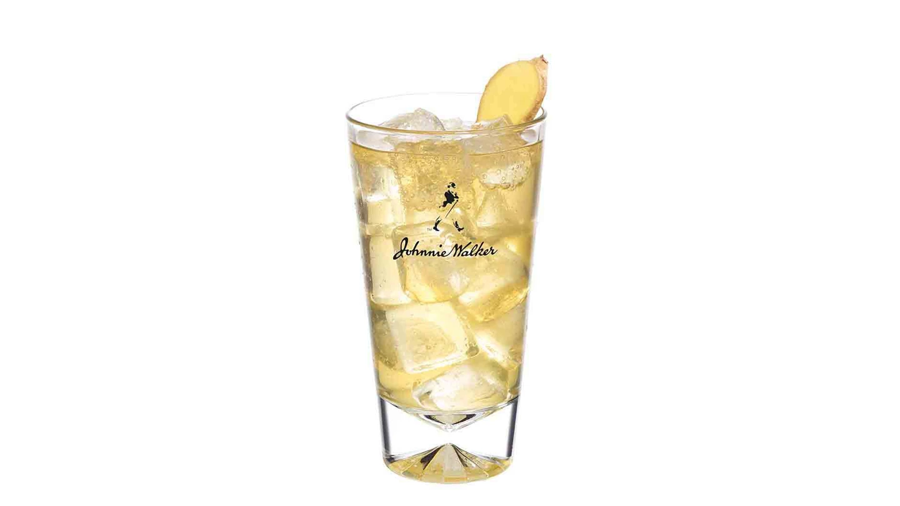
Johnnie Ginger
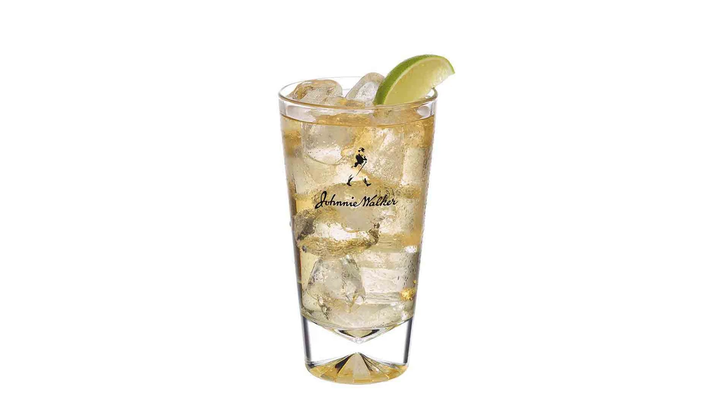
Johnnie Walker Black & Soda
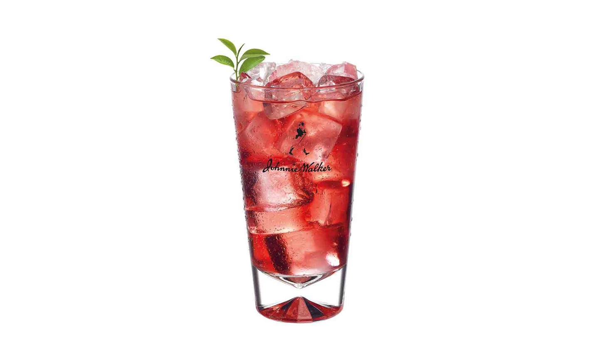
Johnnie Walker Red y Arándanos
TODAS LAS PREPARACIONES Y CÓTELES CON WHISKY
NUESTRA HERENCIA
Siga la historia de Johnnie Walker, desde los cuatro rincones de Escocia hasta los cuatro rincones del mundo.
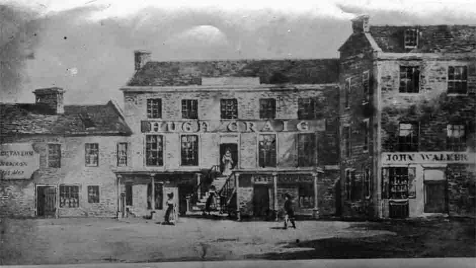
MÁS SOBRE NUESTRA HERENCIA
BEBER RESPONSABLEMENTE
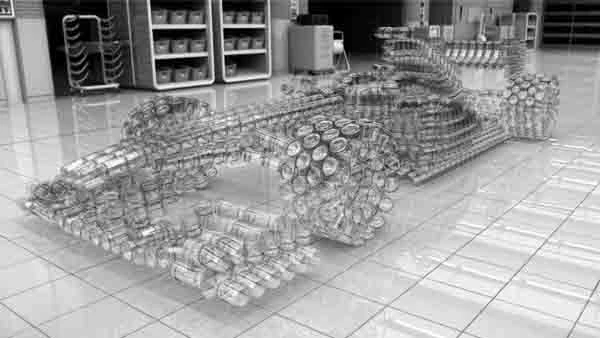
Únase al Pacto para nunca beber y conducir.
MÁS SOBRE BEBER RESPONSABLEMENTE


 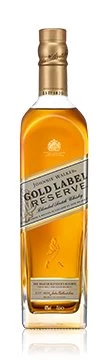
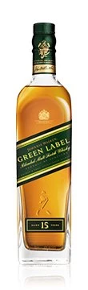
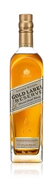
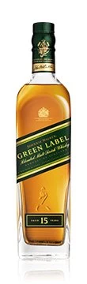